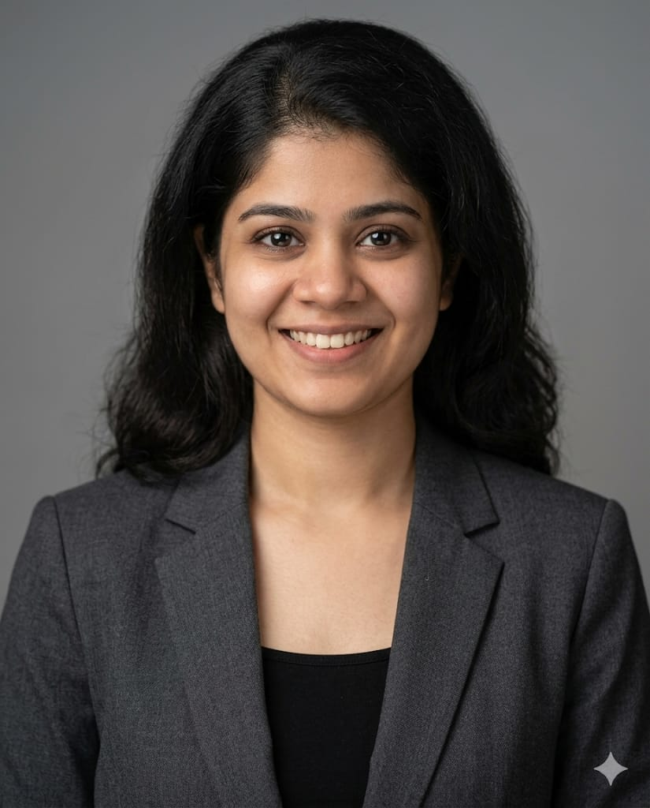

Clinical Oncology.
Digital Health.
Bridging oncology science, clinical practice, and evidence-based decision support.

Where Clinical Oncology
Meets Medical Affairs.
I am a Doctor of Pharmacy professional with experience spanning medical oncology clinical practice and oncology-focused clinical informatics.
Clinical + Digital.
My professional journey has allowed me to work across two complementary perspectives: understanding the complexities of patient-centered oncology care and translating evolving scientific evidence into structured clinical decision support.
Focused on Medical Affairs and Oncology Medical Science Liaison opportunities to leverage clinical expertise and scientific communication.
Years Experience
In Oncology Practice & Clinical Informatics.
Evidence-Based
NCCN Guideline Translation & Literature Interpretation.
Turning Evidence into Conversations.
Scientific Exchange
Evidence-based discussions around oncology therapeutics, treatment pathways, emerging evidence, and clinical practice considerations.
HCP Education
Scientific and therapeutic education for healthcare professionals and development of evidence-based educational content.
Evidence Synthesis
Review and interpretation of scientific literature, clinical guidelines, emerging evidence, and landmark oncology trials.
Guideline Translation
Interpret and incorporate updates from NCCN Guidelines into oncology treatment pathways and structured JSON logic.
Experience.
A progressive path from clinical foundations to digital decision support.
Doctor of Pharmacy (Pharm.D)
Rajiv Gandhi University of Health Sciences
Built a foundation in pharmacotherapy, clinical pharmacy, pharmacology, therapeutics, and evidence-based healthcare.
Clinical Pharmacologist / Clinical Pharmacist
Apollo Hospitals (JCIA Accredited), Bengaluru
Worked closely with the medical oncology team supporting patient-specific cancer treatment workflows and medication-related clinical decision processes.
Guest Lecturer (Part-time)
Sri Viswasai Nursing College
Teaching pharmacology, pathology, and genetics to nursing students. Providing clinical insights into medicines and connecting academic concepts with clinically relevant examples.
Co-Owner
Andaaz-e-Cinema (@andaaz.e.cinema)
Co-owning and managing a global cinema-focused social media page with 13.2K+ followers, demonstrating strong understanding of content strategy, viral content, and audience engagement.
Clinical Application Specialist – Oncology
FhirEngine Inc. (OncoSure)
Working at the intersection of oncology clinical knowledge and healthcare technology, supporting the translation of evidence-based oncology guidelines into structured clinical decision-support workflows.
Featured Case Studies.
Translating Oncology Guidelines Into CDS.
Oncology guidelines evolve continuously, creating a need for clinical decision-support systems to remain aligned with current evidence and standards of care.
The Approach
Evaluated relevant guideline updates and translated clinical logic into structured workflows and JSON-based clinical scripts.
Collaborated with clinical and technical stakeholders to review content for clinical accuracy and alignment with intended decision pathways.
Recent Research
- Fatigue Associated with Immune Therapies: Contextualizing Patterns and Analyzing Associated Factors.
- Genomics in Indian Oncology Care: Barriers to Real-World Implementation and Awareness.
- Severe Dermatologic irAEs: Live and Let Flare as Indicators of Oncologic Response.
Evidence-Based Care in Clinical Practice.
Working directly within oncology clinical practice to understand not only what the evidence says, but also how evidence is applied in real-world clinical environments.
Building a Global Cinema Community.
Driving reach, engagement, and audience growth through strategic content creation and social media management for a dedicated online community.
Andaaz-e-Cinema
Co-owning and managing a global cinema-focused social media page with a highly engaged audience of 13.2K+ followers.
Successfully created and managed content strategies, including 10+ reels that surpassed 1 million views, demonstrating a strong understanding of viral content and audience dynamics.